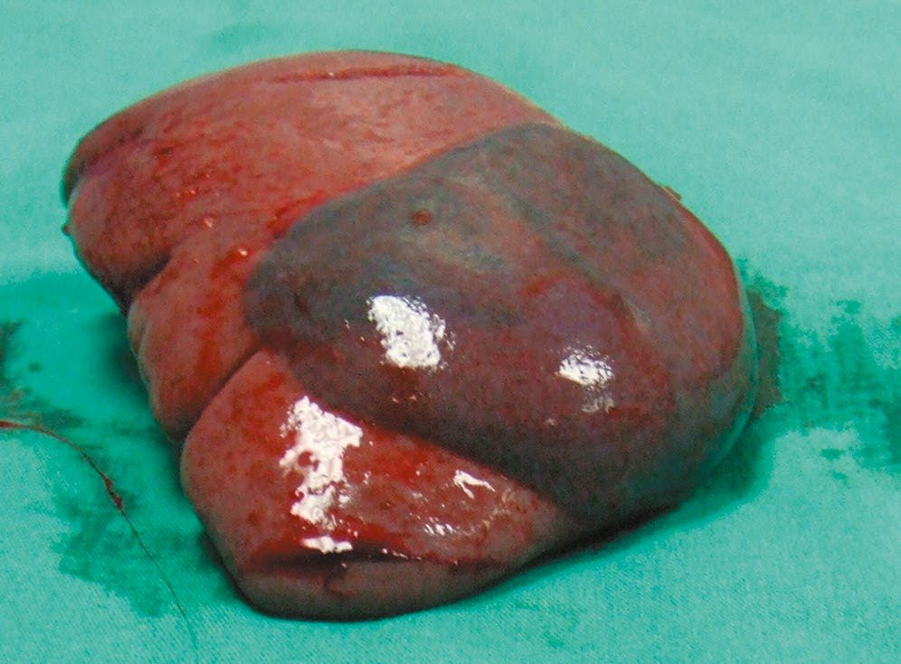
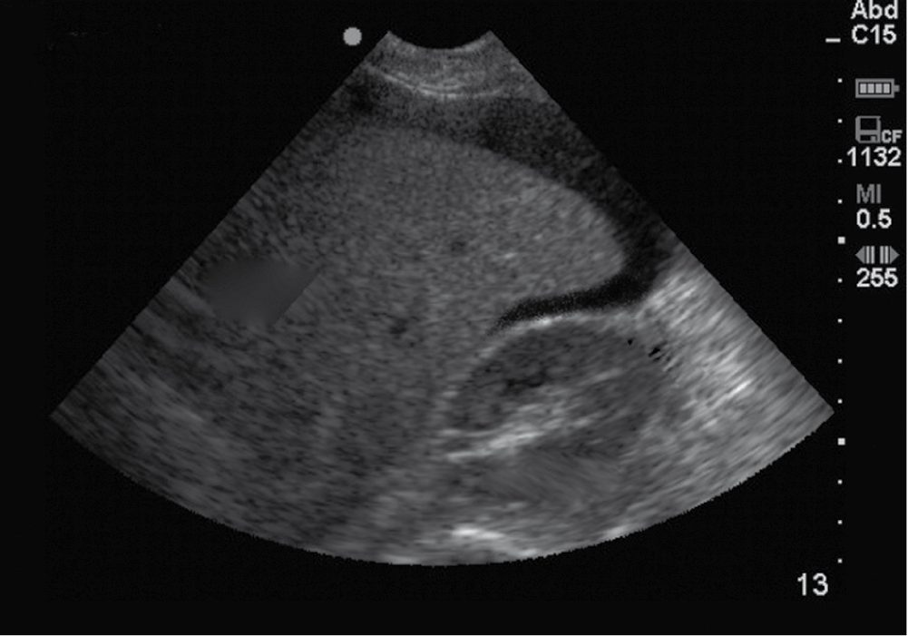
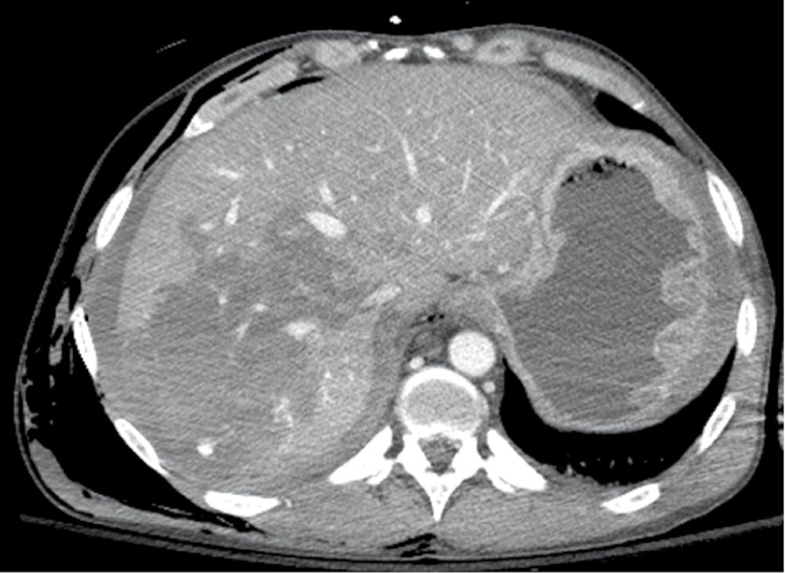
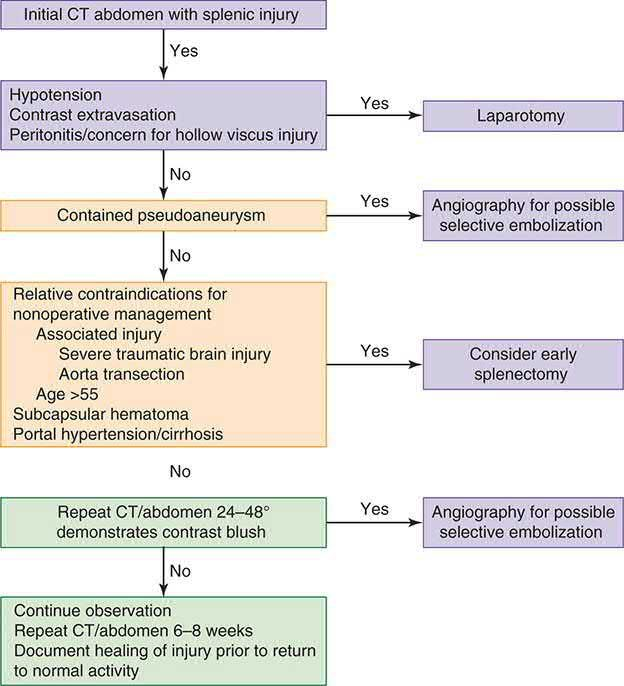
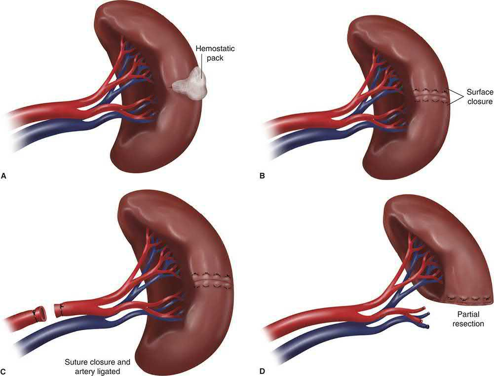

Abdominal Trauma
Summary
- Abdominal trauma is a major source of morbidity and mortality after injury, affecting 11.7% of patients in the National Trauma Data Bank with an associated case fatality rate of 12.9%; predominant sources of death are haemorrhage and visceral perforation with sepsis [1].
- The spleen and liver are the most commonly injured intra-abdominal organs in blunt trauma, while the small bowel is most often injured in penetrating trauma [1][2].
- Management strategy is dictated primarily by the patient's haemodynamic status rather than injury mechanism alone [1][3].
- Maingot's frames the central tension of the modern era: with the pendulum continuing to move toward non-operative and selective management because of enhanced diagnostic modalities, the hazards of missed or delayed diagnosis are well known and equally well respected [4].
- There is no NICE guideline on abdominal trauma as such.
- UK practice is set by NICE NG39 on major trauma, which governs imaging, volume resuscitation, haemorrhage control and the choice between damage control and definitive surgery, and by NICE NG37 on complex fractures, which governs the pelvic component of the same injury pattern.
- Neither is organ-specific, and both are written around haemodynamic status rather than around anatomy, the same organising principle the textbooks use.
Three of NG39's recommendations have their sharpest effect on the abdomen and are set out in the sections below: the prohibition on using FAST before or as a screen for CT [5], the requirement for whole-body CT in the stable blunt polytrauma adult [5], and the three-way split between damage control surgery, considered definitive surgery, and definitive surgery keyed to the response to volume resuscitation [5].
Definition
Abdominal trauma is classified as blunt, compressive, deceleration, or crush forces causing organ contusion, laceration, or hollow-viscus rupture, or penetrating, where stab or gunshot wounds directly lacerate solid or hollow viscera [1][6]. Patients are further classified by physiological state after initial resuscitation into "normal", who undergo full investigation before treatment; "non-compromised", who undergo limited investigation to determine operative versus non-operative management; and "compromised", who require immediate surgery with investigation suspended [3].
The four regions of the abdomen
Maingot's defines the abdomen as the component of the torso bounded superiorly by the left and right hemidiaphragm, which can ascend to the level of the nipples at the 4th intercostal space in front and to the tip of the scapula behind, and inferiorly by the pelvic floor; for clinical purposes it is divided into four areas [4]:
| Region | Boundaries |
|---|---|
| Anterior abdomen | Below the anterior costal margins to above the inguinal ligaments, anterior to the anterior axillary lines |
| Intrathoracic abdomen | From the nipple or the tips of the scapula to the inferior costal margins |
| Flank | Inferior scapular tip to the iliac crest, between the posterior and anterior axillary lines |
| Back | Below the tips of the scapula to the iliac crest, between the posterior axillary lines |
- Table reformats the clinical topography of the abdomen [4].
- The clinical point of the definition is the first line of it: because the diaphragm rises to the nipples in front and the scapular tip behind, a wound below the nipple line is an abdominal wound until proven otherwise
- A viscera-rich region, the abdomen can often be the harbinger for occult injuries, particularly in the unevaluable abdomen of a patient with a compromised sensorium [4].
Pathophysiology
- Blunt deceleration injury results from differential movement of fixed and non-fixed anatomical structures, causing tearing or avulsion from the vascular pedicle, classically liver tear or vena caval rupture [6].
- Direct compression bursts solid organs such as the liver when compressed between the impacting object and the ribcage or vertebral column [3].
- Blunt forces can rupture hollow viscera by rapid compression of a fluid- and gas-filled segment of intestine [1].
- Most blunt hepatic lacerations occur along segmental fissures because the vascular and biliary structures there are relatively shear-resistant, which explains why a large stellate "bear claw" laceration may produce little intraperitoneal blood [4].
- Deceleration shear forces can avulse hepatic veins from the vena cava, producing devastating, difficult-to-control haemorrhage [4].
- The spleen's location in the left upper quadrant lends susceptibility to injury from broken ribs, deceleration and blunt percussion forces [4].
- Browse's makes the same point from the chest wall: rib fractures are often associated with injuries of the great vessels, lungs, spleen or liver [7].
Kinetic energy in penetrating injury
- High-velocity gunshot wounds transfer greater kinetic energy and cause additional injury through cavitation, tumble, and fragmentation compared with stab wounds or low-velocity gunshot wounds [6].
- Maingot's quantifies the ordering across the civilian arsenal.
- Kinetic energy correlates with wounding potential and depends on mass and velocity, so the higher the velocity, the greater the wounding potential; because the barrel of a rifle is longer than that of a handgun, the bullet has more time to accelerate and reaches a much higher velocity, and a high-velocity missile is propelled at 2,500 feet per second or greater [4].
- Airguns fire pellets at low velocity and low wounding potential.
- Shotguns fire a cluster of pellets that separate after leaving the barrel with rapidly decreasing velocity, so wounding potential diminishes with distance, but at close range, under 15 feet, the increase in aggregate mass makes tissue destruction similar to a high-velocity missile injury [4].
- Kinetic energy from hand-driven weapons such as knives is substantially less than that from firearms, and it matters to know the length and width of the wound and the depth of penetration of the weapon [4].

Clinical features
- Blood in the peritoneal cavity is not an irritant and initially causes no abdominal pain; distension is subjective and hypotension may be a late sign, particularly in young, fit patients, so clinical examination alone is unreliable [3].
- Kehr's sign, referred pain to the left shoulder on deep inspiration, suggests splenic injury with subphrenic irritation [4].
- Splenic injury classically presents with hypotension, left upper quadrant pain or tenderness, or diffuse peritonitis from extravasated blood [4].
- An abdominal seat-belt mark or wall ecchymosis raises concern for underlying bowel or mesenteric injury [1][2][7].
- Physical examination for liver injury has a false positive rate of approximately 50% and false negative rate of 40% [4].
- Absolute indications for exploratory laparotomy in penetrating abdominal injury include peritonitis, evisceration, an impaled object, haemodynamic instability, bleeding from a natural orifice, and documented pneumoperitoneum [4].
The abdomen in the secondary survey
- Browse's is the only one of the seven books to set out the abdominal examination as a discrete step of the secondary survey, and its central proposition is that the primary survey usually detects major intra-abdominal haemorrhage, but a secondary survey is essential to pick up continuing severe haemorrhage or further bleeding following the restoration of a normal blood pressure [7].
- Increasing abdominal distension, tenderness and guarding are all significant signs, especially when associated with a rising pulse and other signs of hypovolaemia; bowel sounds may or may not be abolished by free blood or bowel contents in the peritoneal cavity, so their presence proves nothing [7].
- Skin bruising over the abdomen, penetrating wounds and associated rib fractures all indicate the possibility of abdominal organ damage, and when doubt persists CT is indicated [7].
- Browse's then adds the genitourinary caution that sits with the abdominal examination. Blood coming from the external urethral meatus, or frank haematuria, suggests kidney, bladder or urethral damage; rectal and vaginal examination can confirm a high-riding and boggy prostate or associated vaginal injuries, and the presence of these injuries must always be excluded before allowing catheterisation by inexperienced junior staff or nurses [7].
- Where palpation or percussion detects a large bladder, and especially if the prostate feels abnormal or blood has been seen at the urethra, it may be preferable to insert a suprapubic catheter [7].
- At log roll, palpation down the spinous processes may detect boggy swelling, deformity or a step, and the opportunity should be taken to inspect and palpate the back of the head, neck, torso and limbs.
- A rectal examination is performed at this stage with perianal sensation, motor function, sphincter tone and the bulbocavernosus reflex tested [7].
- Maingot's adds the components of the penetrating examination.
- Inspection can determine the location, extent and number of wounds and sometimes the trajectory of the missile, guiding management.
- Palpation elicits tenderness, frank peritoneal signs, distension and rigidity, and occasionally missiles can be palpated lodged in soft tissue; unless in a controlled and sterile setting such as theatre, probing of a wound should be avoided
- Auscultation can detect diminished or absent bowel sounds suggesting evolving peritonitis, and can also detect a trauma-induced bruit, suggestive of a vascular injury [4].
Etiology
- Stab wounds commonly involve the liver (40%), small bowel (30%), diaphragm (20%), and colon (15%); high-velocity gunshot wounds commonly involve the small bowel (50%), colon (40%), liver (30%), and vessels (25%) [6].
- Approximately one-third of stab wounds do not penetrate the peritoneum, and only half of those that do require operative intervention; the number of organs injured and the intra-abdominal sepsis complication rate are both significantly less than for gunshot wounds [4].
- Isolated splenic injury comprises approximately 42% of blunt abdominal injuries, and represented 8.5% of penetrating abdominal injuries in the 2012 National Trauma Data Bank [1].
- Blunt pancreatic and duodenal injury is uncommon, the duodenum accounting for under 2% of abdominal trauma, because of their retroperitoneal location, with most duodenal injuries due to penetrating mechanisms [1].
- Maingot's puts the incidence of blunt bowel injury at 1% to 5% across all blunt trauma series [4].
From mandatory laparotomy to selective management
- Maingot's traces a complete reversal of policy that is worth knowing because it explains the current caution.
- In the 19th century, expectant observation was the approach of choice worldwide; in the 1880s the French surgeon Paul Reclus advocated supportive care only for penetrating abdominal injuries, and Sir William MacCormac, chief army surgeon of the same period, coined the aphorism that "if a man undergoes surgery after being shot he dies and lives if left in peace" [4].
- With predictably overwhelming morbidity and mortality, mandatory exploration became the standard of care instead.
- Shaftan's and Nance's landmark articles emphasising surgical judgement then changed the approach from mandatory coeliotomy to selective management, and enhanced diagnostic imaging has made non-operative and selective management a more reliable and acceptable option [4].
Diagnosis
- FAST examines four windows, subxiphoid for the pericardium, left subcostal for the splenorenal recess, right subcostal for Morison's pouch, and suprapubic for the pelvic cul-de-sac, for free fluid, with a detection threshold of at least 200 mL and reported sensitivity 73–88%, specificity 98–100% and accuracy 96–98% [3][4][6]. eFAST is unreliable for excluding injury in penetrating trauma and has low sensitivity, 29–35%, for solid organ injury without haemoperitoneum, and cannot reliably assess the retroperitoneum [3].
- Diagnostic peritoneal lavage, now largely superseded by FAST and CT, is considered positive with aspiration of more than 10 mL of gross blood, or lavage fluid showing more than 100,000 RBC/µL or more than 500 WBC/µL [1][3][4].
- Its pitfalls are a relatively high false positive rate, the risk of creating visceral injury, and poor sensitivity for retroperitoneal structures such as the pancreas and duodenum; a Foley catheter and nasogastric tube placed first minimise iatrogenic events, and patients with pelvic fractures, suspected retroperitoneal haematoma, or pregnancy should undergo a supra-umbilical approach [4].
- CT with IV contrast is the gold standard in the haemodynamically stable patient, reliably identifying solid organ injury via disrupted architecture, free fluid, and "vascular blush", but has recognised limitations in detecting hollow viscus and diaphragmatic injury [3][4].
- Multidetector scanners have drastically improved resolution and accuracy, and negative predictive values as high as 99.63% have been reported for patients sustaining significant blunt mechanisms, which is what allows CT to serve as a reliable non-invasive screening tool.
- Prospective data have shown that a patient with a significant mechanism and a benign abdomen can be released from the emergency department if abdominal CT shows no visceral injury, provided there is no other reason for hospitalisation [4].
- Direct CT signs of blunt bowel injury are oral contrast extravasation and free air, present in only 4% and 28% of cases respectively; indirect signs include bowel wall thickening, mesenteric stranding, and unexplained free fluid without solid organ injury [4].
- Detection of bowel injury on CT is a particular challenge in the intoxicated, intubated or head-injured patient without a reliable abdominal examination [4].
- Diagnostic laparoscopy is the study of choice for excluding diaphragmatic injury, particularly in left thoracoabdominal penetrating wounds, since no other diagnostic modality can reliably rule it out [1][4].
- For penetrating flank and back stab wounds, CT with IV and often rectal contrast is used; for anterior abdominal stab wounds, local wound exploration, serial abdominal examination, or CT are considered equivalent management pathways in stable, examinable patients [1].
- Local wound exploration has the advantage that the patient can be discharged from the emergency department if exploration fails to demonstrate penetration of the posterior fascia and peritoneum; if the patient must go to theatre for other injuries, the exploration should be done there for better lighting and a more sterile environment, and a positive finding dictates a formal laparotomy or laparoscopy [4].
- Even with local wound exploration as a guide, the non-therapeutic laparotomy rate can be high, since only one-third of patients with anterior abdominal stab wounds require a therapeutic laparotomy [4].
- Maingot's caution stands over the whole of the diagnostic section: the examiner has to be keenly aware that the abdominal examination will be unreliable in the presence of possible spinal cord injury or an altered mental state [4].
NICE's imaging rules displace the FAST-first algorithm. Four recommendations govern the abdomen:
- Do not use FAST or other diagnostic imaging before immediate CT in patients with major trauma [5].
- Do not use FAST as a screening modality to determine the need for CT [5].
- Be aware that a negative FAST does not exclude intraperitoneal or retroperitoneal haemorrhage [5].
- Where a patient with suspected haemorrhage is haemodynamically unstable and not responding to volume resuscitation, limit diagnostic imaging such as chest and pelvis X-rays or FAST to the minimum needed to direct intervention [5].
- For the patient who is responding to resuscitation or whose haemodynamic status is normal, consider immediate CT [5], and for the adult with blunt major trauma and suspected multiple injuries this means whole-body CT, a vertex-to-toes scanogram followed by CT from vertex to mid-thigh, with the patient not repositioned during the scan [5].
- Children under 16 must not routinely have whole-body CT; clinical judgement limits CT to the body areas where assessment is needed [5].
- All imaging for suspected haemorrhage must be performed urgently and interpreted immediately by a healthcare professional with training and skills in this area [5].
The practical effect is that FAST in UK major trauma is no longer a triage test in the stable patient, it is reserved for the crashing patient in whom there is no time for CT, exactly inverting the sequence in which it is usually taught.


Scoring and Severity
- The American Association for the Surgery of Trauma (AAST) Organ Injury Scale grades splenic, hepatic, and renal injuries from Grade I to V based on the extent of parenchymal and subcapsular disruption and vascular involvement, and guides operative versus non-operative management [1][3][4].
- For hepatic injury, Grade I and II injuries constitute 60–70% of cases and are usually managed non-operatively; Grade III injuries occur in about 25%; Grades IV and V occur in 7% and 3% respectively and carry high lethality [4].
- Risk factors for failure of non-operative splenic management include higher AAST grade (III–V), large haemoperitoneum, contrast blush or pseudoaneurysm, and possibly age over 55 [4].
Destructive versus non-destructive bowel wounds
For bowel injury, the AAST scale runs Grade I contusion or partial-thickness laceration without perforation; Grade II full-thickness wounds involving less than 50% of the circumference; Grade III lacerations of more than 50% of the circumference without complete transection; Grade IV complete transection; and Grade V transection with segmental tissue loss or devascularisation of the mesentery [4]. Maingot's argues that the important simplification is a binary one, because it determines the operation [4]:
| Category | Grades | Management |
|---|---|---|
| Non-destructive | I–III | Debridement and primary-suture enterorrhaphy |
| Destructive | IV–V | Resection of an entire segment, for loss of colonic integrity or devascularisation of the mesentery |
Table reformats the destructive/non-destructive distinction [4]. Most small bowel destructive injuries should be resected and reconstituted unless damage control conditions prevail [4].
- The UK does not grade abdominal injury for its national standards, it grades the patient's physiology and the clock.
- For a trauma laparotomy the relevant benchmarks come from the National Emergency Laparotomy Audit, whose principle standards derive from the RCS England report The High-Risk General Surgical Patient: Raising the Standard (2018) and cover CT reported by a senior radiologist within an hour, arrival-to-theatre time, consultant presence, and critical care admission thresholds [8].
- NELA's own definition of "immediate surgery" includes laparotomy for gastrointestinal perforation, generalised peritonitis, and uncontrolled haemorrhage or sepsis, which is where a trauma laparotomy sits [8].
NG39 provides the physiological grading in its place, as a three-way split by response to volume resuscitation, and the choice of verb in each recommendation carries the strength [5]:
| Haemodynamic status | Recommendation |
|---|---|
| Unstable, not responding to volume resuscitation | Use damage control surgery |
| Unstable, responding to volume resuscitation | Consider definitive surgery |
| Haemodynamic status normal | Use definitive surgery |
Table reformats the NG39 surgical-strategy criteria [5]. Activation of the major haemorrhage protocol is likewise physiological: use criteria that include haemodynamic status and response to immediate volume resuscitation, and do not rely on a haemorrhagic risk tool applied at a single time point [5].
Treatment and Management
- Management is stratified by responder status: "responders" who normalise with resuscitation likely "have bled" rather than continuing to bleed; "non-responders" require immediate intervention; "transient responders" initially improve but relapse and generally require expeditious source control [1].
- Approximately 60–80% of blunt splenic injuries (up to about 90% at high-volume centres) are managed non-operatively provided the patient has normal vital signs, no peritoneal signs, and no active contrast extravasation.
- Angioembolisation for contrast blush or pseudoaneurysm improves non-operative success to 90% or greater and reduces failure rates to about 5% in Grade III–V injuries [1][4].
- Maingot's adds the service caveat: facilities without the resources and experience of a bona fide trauma team may not safely meet the demands of non-operative management and should consider patient transfer [4].
- Follow-up CT is recommended 24–48 hours after splenic injury to detect delayed pseudoaneurysm, and at 6 weeks for Grade I–II or 10–12 weeks for Grade III–V before return to normal activity [4].
- Non-operative management of blunt hepatic injury is the treatment approach of choice in the stable patient today [4].
- Haemodynamic instability mandates expeditious operative management or, if the patient can be stabilised, angiography and embolisation [4].
- Damage control with perihepatic packing and temporary closure should be considered early in the patient at risk of abdominal hypertension (hypothermic, coagulopathic, acidotic, or carrying a large transfusion requirement) and in the patient who will need a second-look laparotomy [4]. For hollow viscus injury there is no role for non-operative management [4].
- Following splenectomy, pneumococcal vaccination plus Haemophilus influenzae and meningococcal vaccination should be given, ideally after 14 days post-injury, because of the risk of overwhelming post-splenectomy infection from encapsulated organisms [3][4].

Colon injury: the case against colostomy
- The management of colon injury has been reversed since the Second World War, and Maingot's sets out the numbers behind the reversal.
- The wartime military experience dictated that all colon wounds, destructive or not, be managed by colostomy, and that remained surgical dogma until the 1980s [4].
- A comprehensive review of the literature since 1979 showed primary repair of non-destructive colon wounds had a leak rate of 1.6%, and comparing primary repair with colostomy for similar wounds, the incidence of intra-abdominal abscess was 4.9% versus 12%, and the overall complication rate 14% versus 30%, with similar mortality at 0.11% and 0.14% [4].
- For destructive wounds, resection and primary anastomosis in a collective review of 207 patients gave a leak rate of 7.2% with mortality of 1.7% attributable to the colon wound, and in the largest single-institution experience Murray reported an 11% leak rate in 112 patients with two deaths related to leaks [4].
- In a multi-institutional trial, Demetriades reported 297 destructive colon wounds of which 197 had resection and anastomosis and 100 had diversion, with an anastomotic leak rate of 6.6% and no significant difference in mortality or abdominal complications between the groups, concluding that "patients can be managed by primary repair regardless of risk factors" [4].
- Several risk factors for anastomotic failure have been examined, hypotension, shock, interval from injury to operation, amount of faecal contamination, associated organ injury, transfusion requirement and comorbid disease, and no data have conclusively shown that any of them increase the likelihood of anastomotic failure, although patients with any of them have a higher incidence of intra-abdominal abscess and overall complications [4].
- Three practical qualifications remain: patients with massive blood loss or shock may be better served by a damage control procedure with delayed definitive repair; an interval from injury to repair greater than 12 hours can be a relative contraindication to definitive repair if there is faecal contamination of more than one quadrant; and comorbidities such as AIDS and cirrhosis deserve special consideration, with those patients possibly better off with ostomy diversion [4].
- Maingot's closes the argument by returning the decision to the operating surgeon on a case-by-case basis, for which there is no substitute [4].
- Volume resuscitation in the bleeding abdominal trauma patient follows the major-trauma rules, which forbid the crystalloid bolus the textbooks describe.
- Use a restrictive approach to volume resuscitation until definitive early control of bleeding has been achieved [5]; pre-hospital, titrate to maintain a palpable central pulse, carotid or femoral [5]; in hospital, move rapidly to haemorrhage control, titrating volume to maintain central circulation until control is achieved [5]. In hospital settings do not use crystalloids for patients with active bleeding [5], and pre-hospital use crystalloids only if blood components are not available [5].
- For adults, use a ratio of 1 unit of plasma to 1 unit of red blood cells [5].
- Start with a fixed-ratio protocol and change to a protocol guided by laboratory coagulation results at the earliest opportunity [5].
- Give intravenous tranexamic acid as soon as possible with active or suspected active bleeding, and not more than 3 hours after injury unless there is evidence of hyperfibrinolysis [5].
- Interventional radiology has defined indications, and they differ between the solid organs and the pelvis.
- For solid-organ arterial haemorrhage of the spleen, liver or kidney, NICE says consider interventional radiology techniques [5].
- For active arterial pelvic haemorrhage, it says use them, unless immediate open surgery is needed to control bleeding from other injuries [5], a stronger recommendation for the pelvis than for the abdominal viscera.
- Consider a joint interventional radiology and surgery strategy for arterial haemorrhage extending into surgically inaccessible regions [5].
- NG37 then resolves the practical question of what to do when the pelvis and the abdomen are both bleeding: for first-line invasive treatment of active arterial pelvic bleeding, use interventional radiology if emergency laparotomy is not needed for abdominal injuries, and pelvic packing if emergency laparotomy is needed for abdominal injuries [9].
- Two further NG37 rules bear on the abdominal examination itself.
- A pelvic binder must be removed as soon as possible if there is no pelvic fracture, if a fracture is identified as mechanically stable, if the binder is not controlling mechanical stability, or if there is no further bleeding and coagulation is normal, and all pelvic binders must be removed within 24 hours of application, with the management of a mechanically unstable fracture agreed with a pelvic surgeon before removal [9].
- And do not log roll people with suspected pelvic fractures before pelvic imaging, unless an occult penetrating injury is suspected in a haemodynamically unstable patient, or log rolling is needed to clear the airway, for example where suction is ineffective in a vomiting patient [9].
Surgeries
Laparotomy technique: a midline incision from xiphoid to pubic symphysis; the falciform ligament is divided; blood is evacuated from all four quadrants with packing for temporary haemostasis if the bleeding source is unclear, then systematic exploration from the gastro-oesophageal junction to the rectum, including the lesser sac [1][4].
- Bowel repair.
- At laparotomy the bowel should be examined in its entirety after all other sources of major bleeding are controlled; small injuries are noted and tagged with an identifiable suture for easy reference, and larger wounds contributing to ongoing soiling are temporarily controlled with a whipstitch or Babcock clamps [4].
- Mesenteric haematomas are explored with ligation of injured vessels and defects closed by careful reapproximation of the peritoneal edges so as not to compromise the associated vasculature, with particular attention to the location of the superior mesenteric artery for injuries encroaching on the root of the mesentery [4].
- Small superficial Grade I injuries can be left alone; deeper, longer Grade I injuries are closed with a simple running suture or interrupted Lembert sutures; Grade II and III wounds are debrided back to healthy viable bowel and closed transversely to prevent luminal narrowing [4].
- Single-layer running or interrupted closure is generally sufficient for small bowel, but with significant bowel wall oedema, peritonitis or soiling a two-layer closure with a running inner layer and interrupted Lembert outer layer may be preferable; Grade III colon wounds should be closed in two layers for added protection [4].
- On stapled versus hand-sewn anastomosis the literature is contradictory, two retrospective studies totalling 284 patients found lower leak rates with hand-sewn repair, while two others totalling 484 patients found no difference, so the technique is largely surgeon's preference, except that with oedematous bowel the hand-sewn technique is the more prudent approach [4].
- Liver injury is managed by the "four Ps": Pressure by bimanual compression, the Pringle manoeuvre clamping the portal triad (safe for up to about 45 minutes) to control hepatic arterial and portal inflow, Plug using silicone tubing or a Sengstaken–Blakemore tube for penetrating tracts, and Pack, meaning perihepatic packing for damage control [3][4].
- The finger-fracture technique exposes bleeding vessels within a parenchymal wound for direct ligation or clipping; an omental patch sutured over a raw liver surface provides haemostasis and internal drainage with about 90% success [4].
- The hepatic artery may be ligated if injured, but the portal vein must be repaired or shunted, since ligation carries over 50% mortality [3].
- Anatomic hepatic resection for trauma has been largely abandoned in favour of resectional debridement of non-viable tissue [4].
- Closed suction drainage is left after hepatic surgery [3].
Splenic injury, splenectomy is the safer option in the haemodynamically compromised or multiply injured patient; splenorrhaphy with partial resection and omental buttress may be feasible in stable patients with limited parenchymal injury, preserving roughly 50% of splenic mass to maintain immunological function [3][4]. Pancreatic injury, distal injuries left of the superior mesenteric vessels are treated with closed drainage with or without distal pancreatectomy if the duct is involved; proximal injuries are managed as conservatively as possible; pancreaticoduodenectomy is rarely indicated emergently because of very high associated mortality [3]. Biliary injury, the common bile duct can be repaired over a T-tube, drained, or ligated as part of damage control [3].
Resuscitative endovascular balloon occlusion of the aorta
- REBOA is indicated for refractory haemorrhagic shock due to abdominal or pelvic trauma, its goal being proximal control of abdominal vascular haemorrhage before transport to theatre or the angiography suite [4].
- The technique was first described in 1953 during the Korean War by Lieutenant Colonel David Hughes, who placed a Foley catheter through the femoral artery in three soldiers in haemorrhagic shock; none survived, but Hughes noted temporary improvement with inflation of the balloon [4].
- The common femoral artery is accessed with an 18-gauge needle by landmarks, ultrasound guidance or open cutdown, a 0.035-inch wire fed in Seldinger fashion, a 6 Fr sheath placed and upsized to 11–14 Fr depending on balloon size, and a stiff Amplatz guidewire passed before the balloon is fed over it [4].
- Balloon position is set by three aortic zones [4]:
| Zone | Extent | Use |
|---|---|---|
| I | Left subclavian artery to coeliac trunk | Recommended for abdominal and visceral trauma |
| II | Coeliac artery to lowest renal artery | Contraindicated, can directly occlude the coeliac, superior mesenteric or renal arteries, causing organ ischaemia |
| III | Lowest renal artery to aortic bifurcation | Proximal control for pelvic haemorrhage while maintaining perfusion to the abdominal organs |
- Table reformats the REBOA aortic zones [4].
- Correct filling is confirmed by the balloon flattening against the aortic wall on fluoroscopy, or by loss of the contralateral femoral pulse; animal studies show that occlusion times greater than 60 minutes may cause severe physiological derangement and irreversible organ failure, so inflation should be limited to under 60 minutes [4].
- The balloon is deflated slowly with ongoing communication between surgeon and anaesthetist, since there may be abrupt hypotension on deflation, and the common femoral artery should be exposed and the arteriotomy closed transversely with 5-0 or 6-0 monofilament before sheath removal [4].
- In one case series, trauma surgeons positioned and deployed the balloon appropriately and controlled haemorrhage in 11 of 21 patients with refractory haemorrhagic shock; in Brenner's series of six patients REBOA gave an average systolic rise of 55 mmHg with no deaths from haemorrhage [4].
- Maingot's overall verdict is that in many situations the most effective method of control will still be direct control by laparotomy or embolisation, and that REBOA is a technically feasible and potentially life-saving adjunct in the patient with refractory and end-stage haemorrhagic shock [4].
- NICE has published nothing at all on REBOA, no guideline, no technology appraisal, no HealthTech guidance.
- That absence is worth recording rather than passing over, because it means that in the UK the device sits outside the national guidance framework entirely, and its use is governed by local trust policy and by the trauma network, not by a NICE recommendation of any tier.
- What NG39 does recommend in the same clinical space is the endovascular alternative for a specific injury: use an endovascular stent graft in patients with blunt thoracic aortic injury [5].
The service-level requirement behind all abdominal haemorrhage control is that hospital trust boards must ensure interventional radiology and definitive open surgery are equally and immediately available for haemorrhage control in all patients with active bleeding [10], so that the choice between the angiography suite and the operating theatre is a clinical decision rather than a resource one.

Complications
- Missed hollow viscus injury is the "nemesis" of non-operative management of blunt abdominal trauma, given its catastrophic consequences if delayed [4].
- Delayed splenic rupture may occur 6–8 days after injury, particularly with subcapsular haematoma, which is at increased risk because oozing from the raw parenchymal surface can progressively disrupt the capsule; overall delayed rupture incidence after non-operative management is low, about 1.4% [4].
- Splenic embolisation for subcapsular haematoma is less effective and can cause pain and abscess formation from main splenic artery coiling [4].
- Overwhelming post-splenectomy infection, caused by encapsulated organisms (Streptococcus pneumoniae, Haemophilus influenzae, Neisseria meningitidis) carries a reported incidence of 0.9% and mortality of 0.8% in adults after splenectomy for all causes, with children at greater risk [4][12].
- Concomitant hollow viscus injury occurs in 5–20% of major hepatic injuries [4].
- Common post-splenectomy complications include subdiaphragmatic abscess, pancreatic tail injury, and gastric perforation from short gastric vessel ligation [12].
- Compartment syndrome must always be considered when there are combined orthopaedic and vascular injuries, and it can also follow successful surgical revascularisation of an injured limb [7].
- Missed hollow viscus injury presents as sepsis, and the UK pathway for that is NICE NG253 on suspected sepsis in people aged 16 or over [13].
- Where a trauma laparotomy is required for perforation or peritonitis, the NELA standards apply and set the audited benchmarks: CT undertaken immediately for patients requiring immediate surgery and reported by a senior radiologist at ST3 level or above within one hour, communicated to the surgical team before surgery; arrival at theatre within 6 hours of arrival at hospital for immediate-pathology patients, a clock that runs from arrival at hospital rather than from the decision to operate; consultant surgeon and consultant anaesthetist both present in theatre where the predicted mortality is 5% or greater; and direct admission to critical care postoperatively where predicted mortality is 5% or greater [8].
- The green threshold for each standard is 85% or above, amber is 55–84%, and red is below 55% [8].
Prognosis
- Higher AAST injury grade, meaning Grade IV or V hepatic injury, carries high lethality [4].
- Non-operative management of splenic and hepatic injury reduces hospital length of stay, transfusion requirements, and non-therapeutic laparotomy rates without increasing mortality when properly selected [4]. Mortality from penetrating injuries to the abdominal aorta approaches 80%, and survival hinges on rapid exposure and control of the haemorrhage [4].
- Bleeding remains the leading cause of preventable death in trauma patients who reach hospital [4].
- Before operative intervention, permissive hypotension has been shown to improve survival and decrease hospital stay, its goal being to maintain perfusion to the vital organs while decreasing haemorrhage and clot disruption at the injury site.
- The improved outcomes are thought to result from better thrombus formation at the site together with a decrease in both dilutional and consumptive coagulopathy [4].
- Maingot's closes its chapter on a systems point rather than a clinical one, and it is the same point the UK trauma network was built to answer: standard-of-care management for an individual is heavily dependent on the resources and personnel available, along with transport options, if any
- Resource-rich trauma systems exist with highly qualified personnel, but those systems are not uniform and the concept of regionalisation has not been perfected for all regions [4].
- Management of the multiply injured trauma patient at Level I trauma centres with state-of-the-art techniques has conclusively shown significantly improved patient outcomes and survival [4].
References
- Sabiston Textbook of Surgery, 22nd ed., Ch. 36 Management of Acute Trauma
- The ABSITE Review, 2022, Ch. 15 Trauma
- Bailey & Love's Short Practice of Surgery, 28th ed., Ch. 29 Torso and pelvic trauma
- Maingot's Abdominal Operations, 13th ed., Ch. 19, Tables 19-6 and 19-7
- NICE Guideline NG39: Major trauma — assessment and initial management (2016), 1.5.4; 1.5.5; 1.5.13; 1.5.14; 1.5.18; 1.5.19; 1.5.20; 1.5.22; 1.5.23; 1.5.24; 1.5.27; 1.5.28; 1.5.29; 1.5.30; 1.5.31; 1.5.32; 1.5.33; 1.5.34; 1.5.36; 1.5.37; 1.5.38; 1.5.39; 1.5.40; 1.5.41; 1.5.42; 1.5.43 www.nice.org.uk
- Oxford Handbook of Clinical Surgery, 5th ed., Ch. 15 Major trauma
- Browse's Introduction to the Symptoms and Signs of Surgical Disease, 6th ed., Ch. 5 Major injuries
- National Emergency Laparotomy Audit: principle standards reported by NELA (February 2025), derived from RCS England The High-Risk General Surgical Patient — Raising the Standard (2018), Principle standards www.nela.org.uk
- NICE Guideline NG37: Fractures (complex) — assessment and management (2016, updated 2017), 1.2.16; 1.2.17; 1.2.18; 1.2.19 www.nice.org.uk
- NICE Guideline NG40: Major trauma — service delivery (2016), 1.11.3 www.nice.org.uk
- Maingot's Abdominal Operations, 13th ed., Ch. 77
- Schwartz's Principles of Surgery: ABSITE and Board Review, Ch. 7 Trauma
- NICE Guideline NG253: Suspected sepsis in people aged 16 or over: recognition, assessment and early management (2025), 1.1.1 www.nice.org.uk